0.14
Todo en un solo programa
- Copiar facturas, también de reembolso, exportación y socios
- Facturación masiva de servicios desde el directorio o Excel
- Reembolsos de gastos y factura de exportación
- Cuentas por pagar y compañías de transporte
Facturación electrónica SRI para Ecuador, de Tovel. Un programa para Windows, una app web y la nube trabajando juntos: emites el mismo día aunque el SRI se caiga o la PC esté apagada.
Lo nuevo
Lo que se sumó desde la versión 0.9 hasta la 0.15.
0.14
0.12 – 0.13
0.11
0.10
0.9
0.15
Planes
Facturas, clientes, productos, proformas, RIDE, autorización SRI, anulaciones, correo y reportes de ventas e IVA.
Básico más notas de crédito y débito, guías, retenciones, inventario, compras, cobros y punto de venta.
Profesional más nube con varios equipos, app web y facturación desde el celular.
Cualquier función se puede sumar suelta. Precios en facmit.com.
El programa
Capturas del programa para Windows con datos de demostración ficticios.
Inicio
Ventas del mes, siguiente número de factura, productos con stock bajo, accesos rápidos y el semáforo del SRI siempre visible.
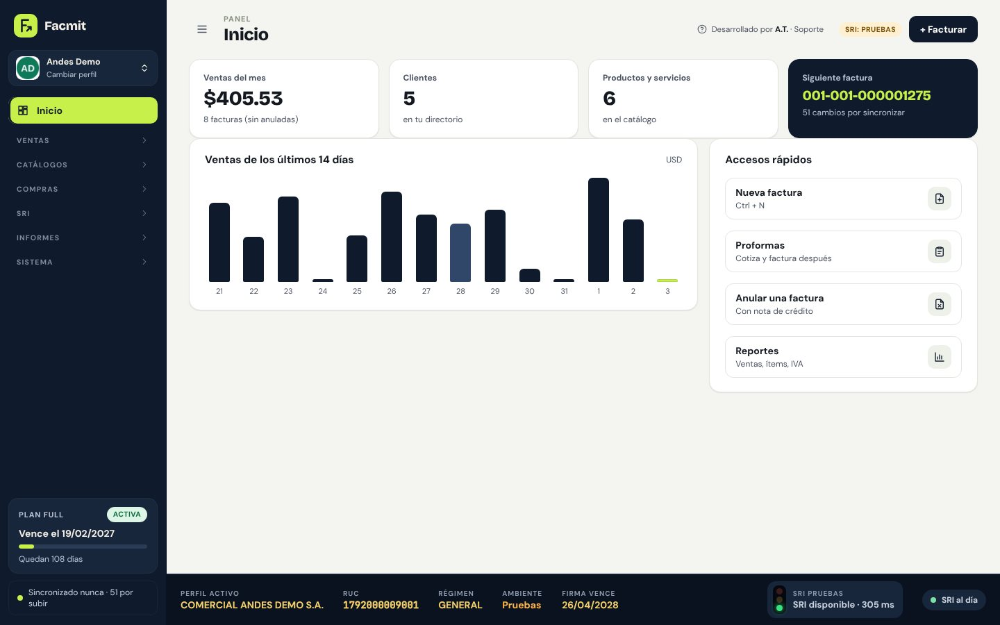
Facturar
Tus productos más vendidos en una barra deslizable: un toque y entran a la factura. El buscador muestra la foto y el stock, y avisa si vendes más de lo que hay.
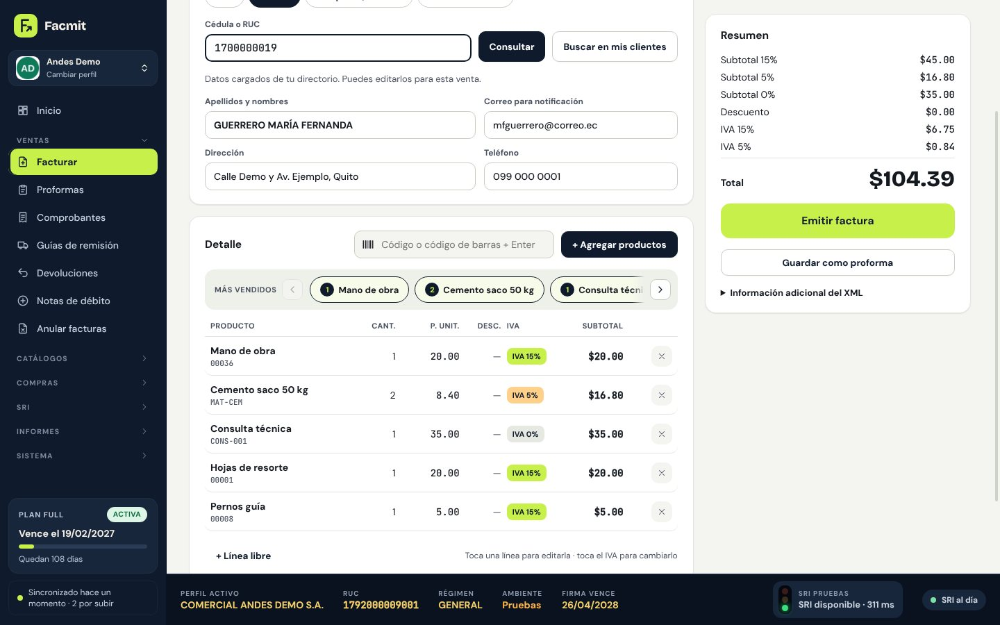
Productos
Con F2 se busca por código o nombre, se eligen varios productos, se ajusta cantidad, precio e IVA y pasan todos juntos a la factura.
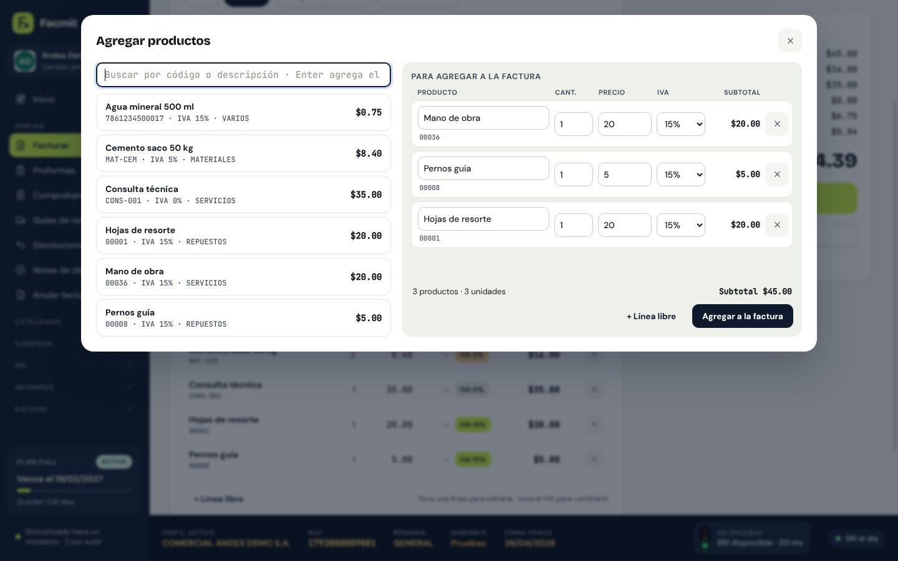
RIDE
Se firma con XAdES-BES, se valida contra el esquema oficial, se envía al SRI y aparece la vista previa del RIDE para imprimir, guardar o enviar por correo.

Autorrelleno SRI
Al escribir un RUC o una cédula, el programa consulta el catastro público del SRI y completa nombre y dirección.
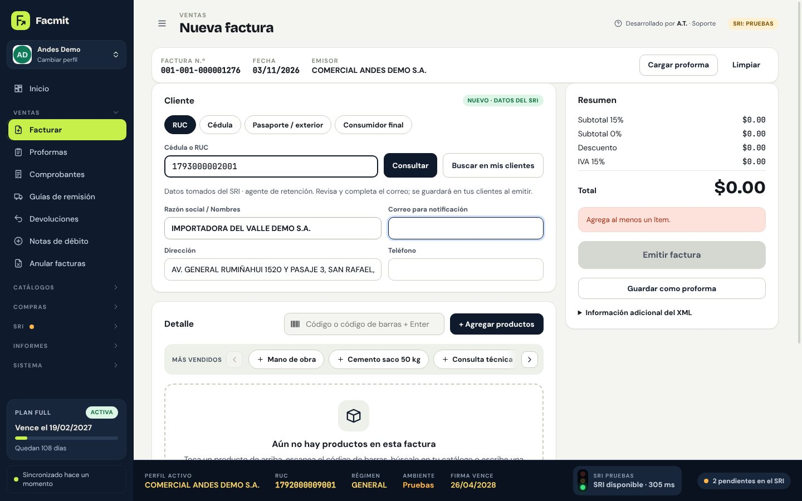
Anulación
Anula una factura con su nota de crédito automática o registra devoluciones parciales con control de saldo.
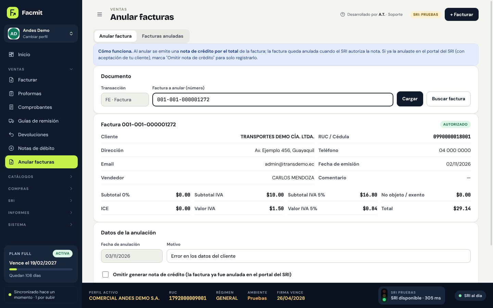
Guías
Desde una factura o a mano, con transportistas guardados y puntos de emisión de compañías de transporte.
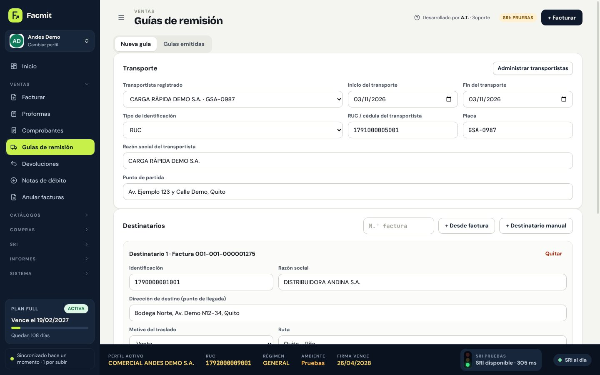
Retenciones
Comprobantes de retención con sustento tributario y tabla de códigos editable; desde una compra salen con los datos ya llenos.
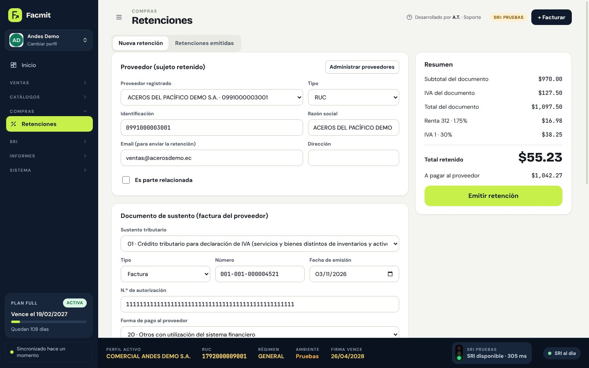
Autorizaciones
Sin conexión sigues facturando: los pendientes se autorizan solos en segundo plano, de todos los perfiles, y te avisa con una notificación.
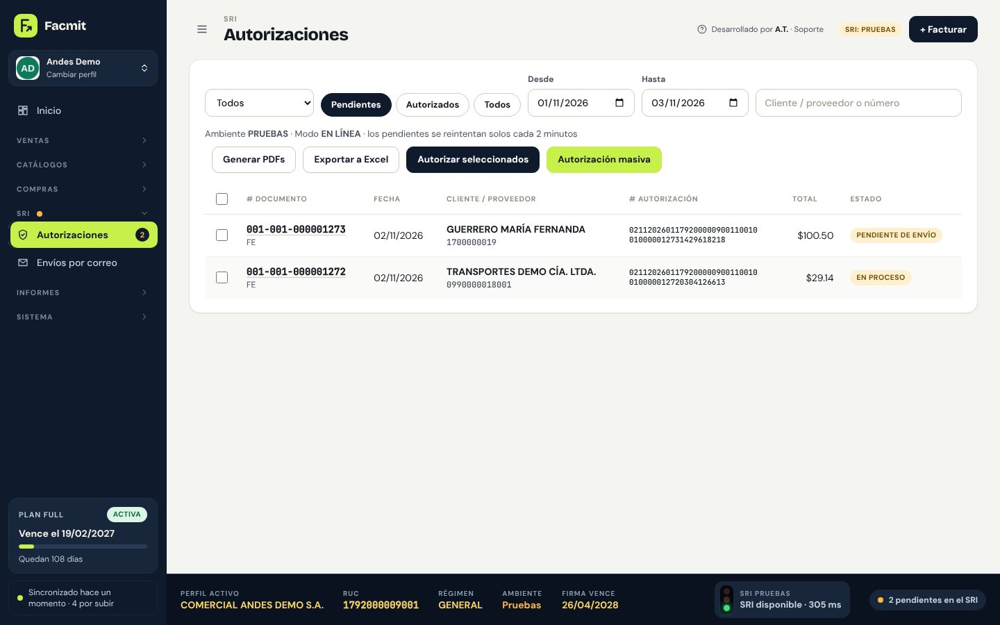
Reportes
Ventas por documento en formato contable, por cliente o vendedor, kardex, existencias, notas, retenciones, resumen de IVA y ATS, en PDF o Excel.
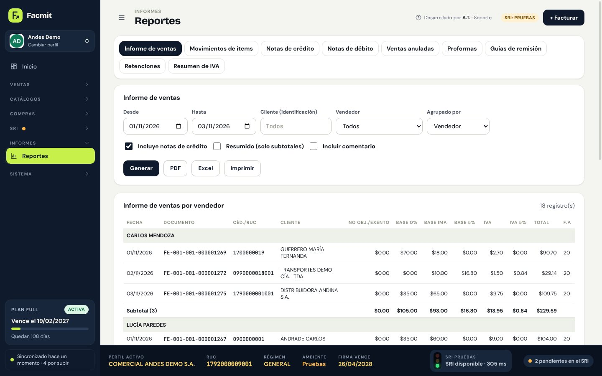
Producción
Una lista de verificación impide facturar en producción sin la firma correcta, los datos completos y una prueba autorizada.
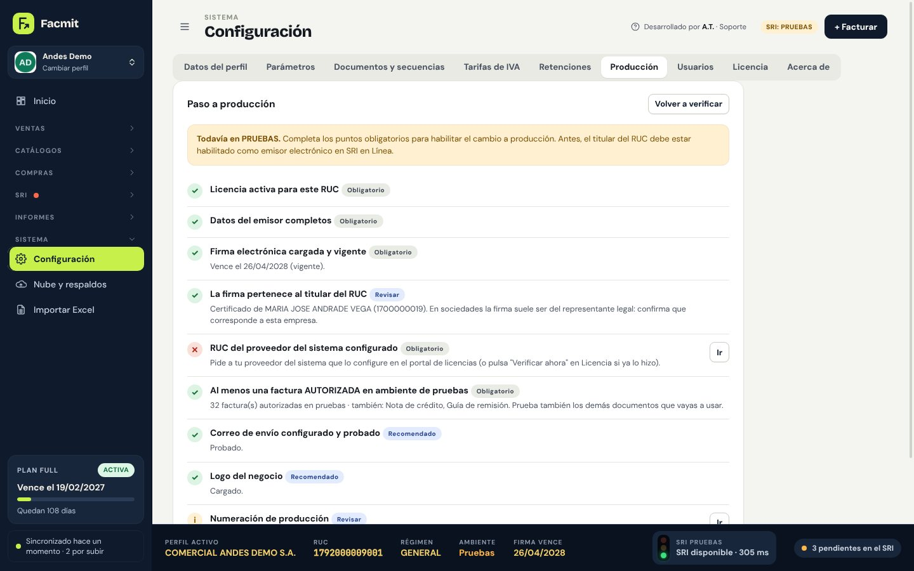
Usuarios
Administrador, supervisor, vendedor, cajero o contador: cada uno ve solo lo que le corresponde, y cada comprobante guarda quién lo emitió.
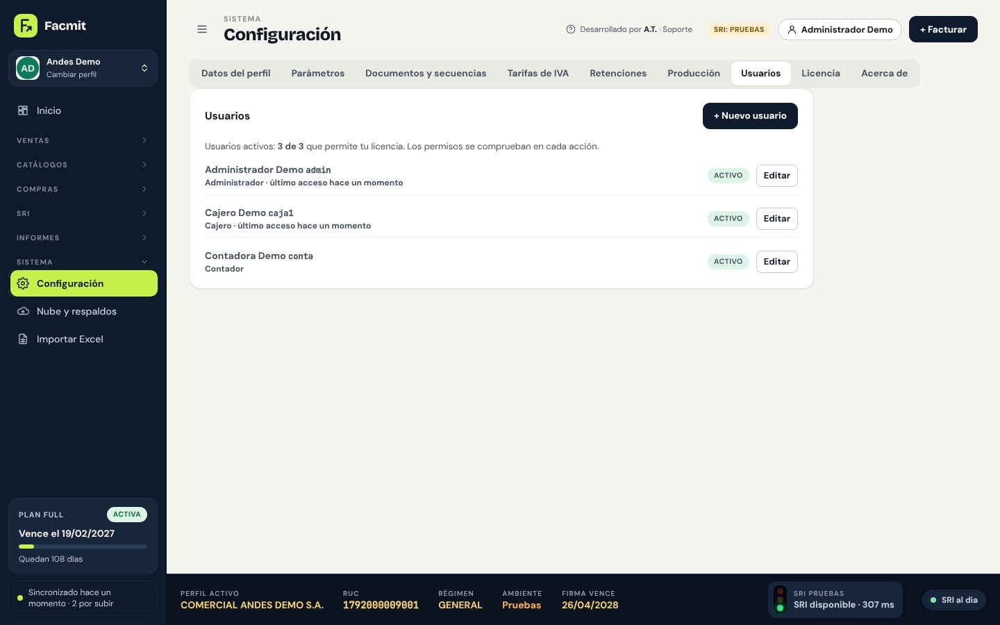
Respaldos
Cada día se guarda una copia de cada empresa y se restaura con un clic; en el plan Completo también sube a la nube.
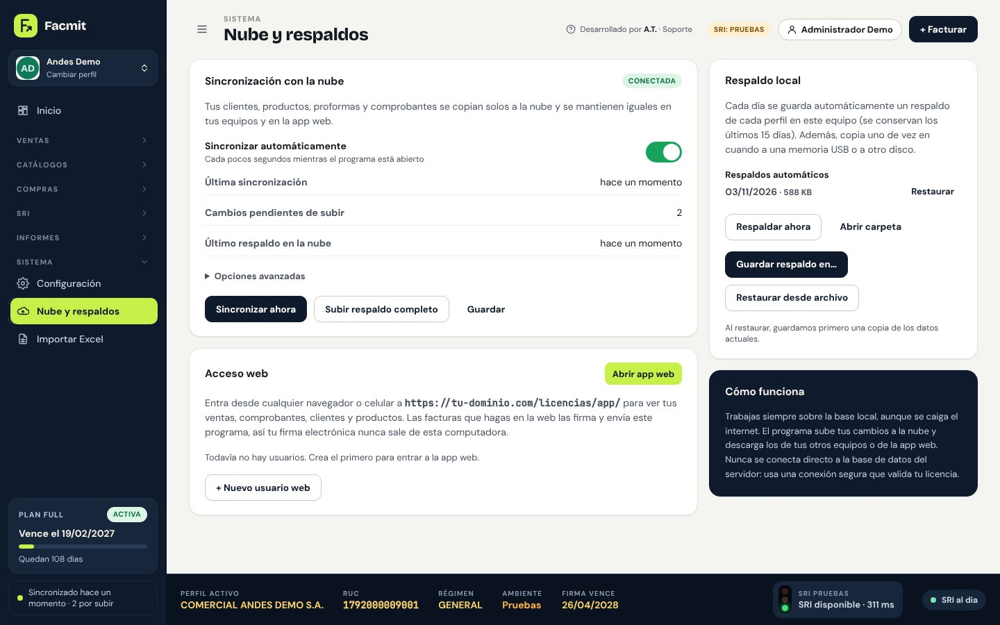
Te ayudamos con la firma electrónica, la habilitación en el SRI y el paso a producción.